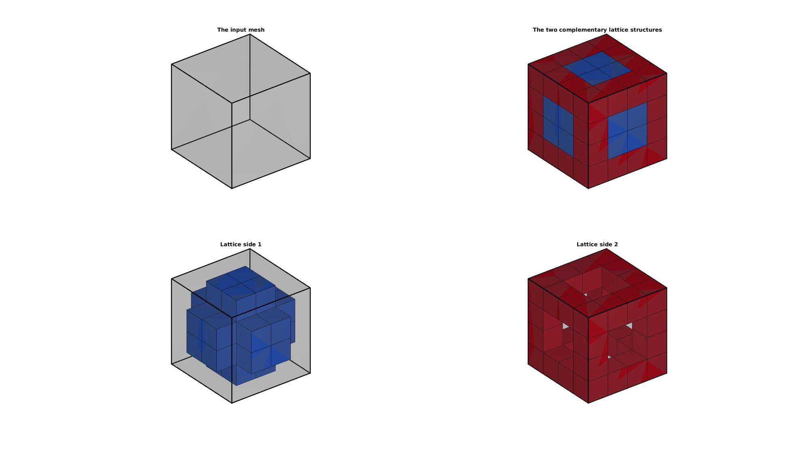
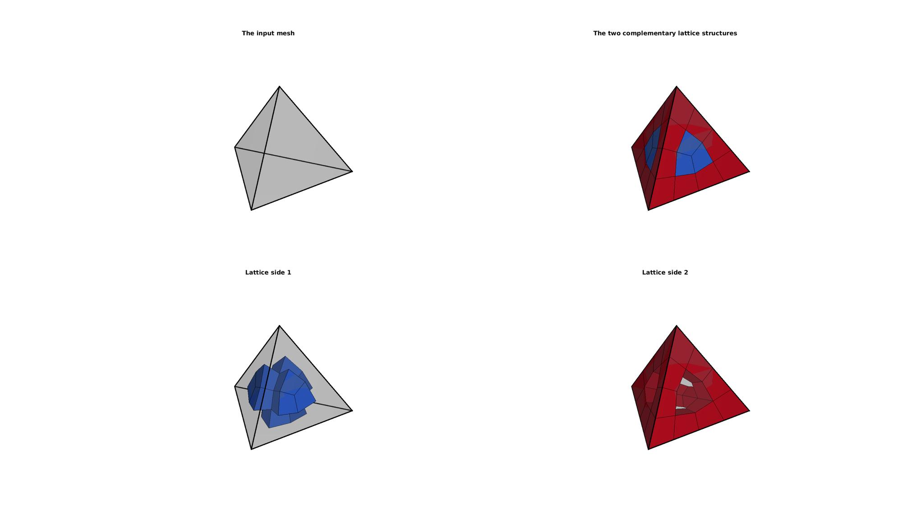
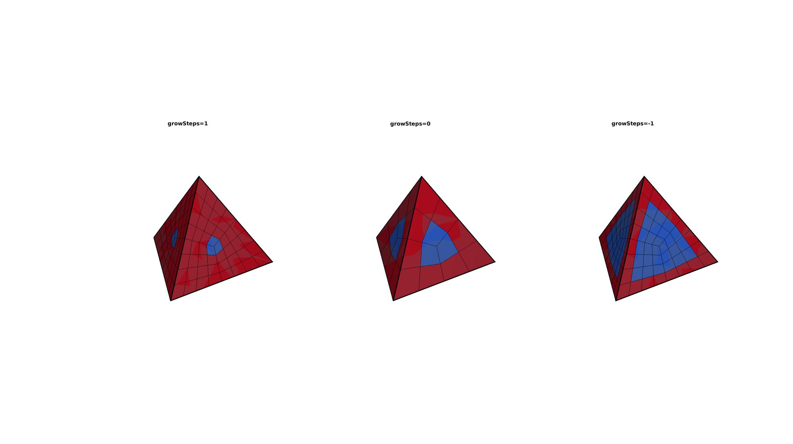
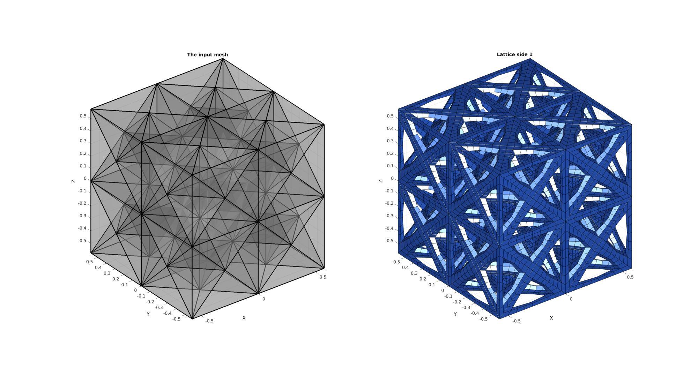
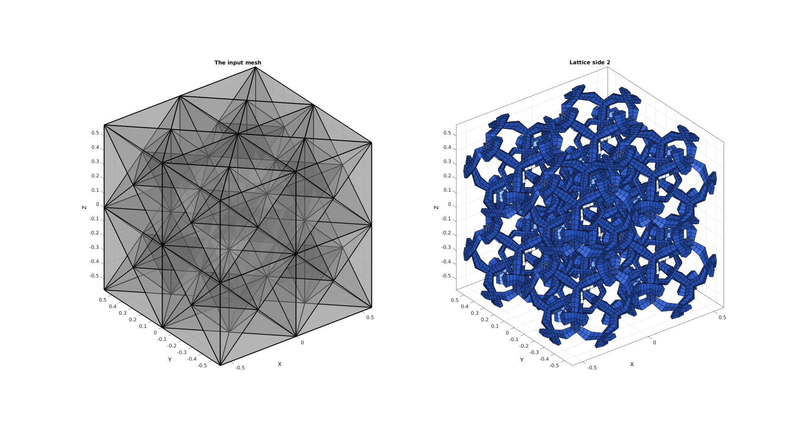
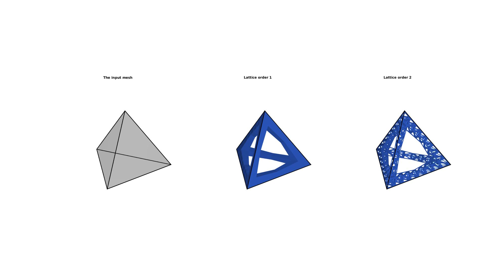

element2HexLattice
Below is a demonstration of the features of the element2HexLattice function
Contents
clear; close all; clc;
Syntax
[Es,Vs,Cs]=element2HexLattice(E,V,cPar);
Description
This function converts an element description (elements and vertices i.e nodes into a lattice structure. The lattice structure is returned as a hexahederal mesh.
Examples
Plot settings
cMap=gjet(4); fontSize=15;
Example 1 Creating a lattice structure on hexahedral meshes
Creating example geometry.
[V,~]=platonic_solid(2,1); %Vertices of cube E=1:8; %Element description of the 8-node cube (hexahedral element) C=(1:size(E,1))'; %color (e.g. material) labels for all elements [F,~]=element2patch(E,C); %Patch data for plotting
Create lattice structure
controlParameter.growSteps=0; %0 is normal, positive or negative integers increase or decrease the edge lattice thickness respectively controlParameter.latticeSide=[]; %Empty outputs both, 1=side 1 the edge lattice, 2=side 2 the dual lattice to the edge lattice [Es,Vs,Cs]=element2HexLattice(E,V,controlParameter); %Get lattice structure
Visualizing input mesh and lattic structures
% Create patch Data for visualization [Fs,CsF]=element2patch(Es,Cs); %Patch data for plotting [Fs1,CsF1]=element2patch(Es(Cs==1,:),Cs(Cs==1,:)); %Patch data for plotting [Fs2,CsF2]=element2patch(Es(Cs==2,:),Cs(Cs==2,:)); %Patch data for plotting cFigure; hs=subplot(2,2,1); title('The input mesh','fontSize',fontSize) hold on; gpatch(F,V,0.5*ones(1,3),'k',0.25,3); axisGeom(gca,fontSize); camlight headlight; lighting flat; ha=axis; axis off; subplot(2,2,2); title('The two complementary lattice structures','fontSize',fontSize) hold on; gpatch(F,V,0.5*ones(1,3),'k',0.25,3); gpatch(Fs,Vs,CsF); colormap(cMap); cLim=caxis; caxis([1 2]); axisGeom(gca,fontSize); camlight headlight; lighting flat; axis(ha); axis off; subplot(2,2,3); title('Lattice side 1','fontSize',fontSize) hold on; gpatch(F,V,0.5*ones(1,3),'k',0.25,3); gpatch(Fs1,Vs,cMap(1,:)); colormap(cMap); caxis(cLim); axisGeom(gca,fontSize); camlight headlight; lighting flat; axis(ha); axis off; subplot(2,2,4); title('Lattice side 2','fontSize',fontSize) hold on; gpatch(F,V,0.5*ones(1,3),'k',0.25,3); gpatch(Fs2,Vs,CsF2); colormap(cMap); caxis(cLim); axisGeom(gca,fontSize); camlight headlight; lighting flat; axis(ha); axis off; drawnow;
Example 2 Creating a lattice structure on tetrahedral meshes
Creating example geometry.
[V,~]=platonic_solid(1,1); %Vertices of tetrahedron E=1:4; %Element description of the 4-node tetrahedron C=(1:size(E,1))'; %color (e.g. material) labels for all elements [F,~]=element2patch(E,C); %Patch data for plotting
Create lattice structure
controlParameter.growSteps=0; %0 is normal, positive or negative integers increase or decrease the edge lattice thickness respectively controlParameter.latticeSide=[]; %Empty outputs both, 1=side 1 the edge lattice, 2=side 2 the dual lattice to the edge lattice [Es,Vs,Cs]=element2HexLattice(E,V,controlParameter); %Get lattice structure
Visualizing input mesh and lattic structures
% Create patch Data for visualization [Fs,CsF]=element2patch(Es,Cs); %Patch data for plotting [Fs1,CsF1]=element2patch(Es(Cs==1,:),Cs(Cs==1,:)); %Patch data for plotting [Fs2,CsF2]=element2patch(Es(Cs==2,:),Cs(Cs==2,:)); %Patch data for plotting cFigure; hs=subplot(2,2,1); title('The input mesh','fontSize',fontSize) hold on; gpatch(F,V,0.5*ones(1,3),'k',0.25,3); axisGeom(gca,fontSize); camlight headlight; lighting flat; ha=axis; axis off; subplot(2,2,2); title('The two complementary lattice structures','fontSize',fontSize) hold on; gpatch(F,V,0.5*ones(1,3),'k',0.25,3); gpatch(Fs,Vs,CsF); colormap(cMap); cLim=caxis; caxis([1 2]); axisGeom(gca,fontSize); camlight headlight; lighting flat; axis(ha); axis off; subplot(2,2,3); title('Lattice side 1','fontSize',fontSize) hold on; gpatch(F,V,0.5*ones(1,3),'k',0.25,3); gpatch(Fs1,Vs,cMap(1,:)); colormap(cMap); caxis(cLim); axisGeom(gca,fontSize); camlight headlight; lighting flat; axis(ha); axis off; subplot(2,2,4); title('Lattice side 2','fontSize',fontSize) hold on; gpatch(F,V,0.5*ones(1,3),'k',0.25,3); gpatch(Fs2,Vs,CsF2); colormap(cMap); caxis(cLim); axisGeom(gca,fontSize); camlight headlight; lighting flat; axis(ha); axis off; drawnow;
Example 3 Changing lattice structure thickness
Creating example geometry.
[V,~]=platonic_solid(1,1); %Vertices of tetrahedron E=1:4; %Element description of the 4-node tetrahedron C=(1:size(E,1))'; %color (e.g. material) labels for all elements [F,~]=element2patch(E,C); %Patch data for plotting
Create lattice structure
controlParameter.latticeSide=[]; %Empty outputs both, 1=side 1 the edge lattice, 2=side 2 the dual lattice to the edge lattice
lattice structure for 0 growth steps
controlParameter.growSteps=0; %0 is normal, positive or negative integers increase or decrease the edge lattice thickness respectively [Es_0,Vs_0,Cs_0]=element2HexLattice(E,V,controlParameter); %Get lattice structure controlParameter.growSteps=1; %0 is normal, positive or negative integers increase or decrease the edge lattice thickness respectively [Es_1,Vs_1,Cs_1]=element2HexLattice(E,V,controlParameter); %Get lattice structure controlParameter.growSteps=-1; %0 is normal, positive or negative integers increase or decrease the edge lattice thickness respectively [Es_n1,Vs_n1,Cs_n1]=element2HexLattice(E,V,controlParameter); %Get lattice structure
Visualizing input mesh and lattic structures
% Create patch Data for visualization [Fs_0,CsF_0]=element2patch(Es_0,Cs_0); %Patch data for plotting [Fs_1,CsF_1]=element2patch(Es_1,Cs_1); %Patch data for plotting [Fs_n1,CsF_n1]=element2patch(Es_n1,Cs_n1); %Patch data for plotting cFigure; subplot(1,3,1); title('growSteps=1','fontSize',fontSize) hold on; gpatch(F,V,0.5*ones(1,3),'k',0.25,3); gpatch(Fs_1,Vs_1,CsF_1); colormap(cMap); cLim=caxis; caxis([1 2]); axisGeom(gca,fontSize); camlight headlight; lighting flat; axis off; subplot(1,3,2); title('growSteps=0','fontSize',fontSize) hold on; gpatch(F,V,0.5*ones(1,3),'k',0.25,3); gpatch(Fs_0,Vs_0,CsF_0); colormap(cMap); cLim=caxis; caxis([1 2]); axisGeom(gca,fontSize); camlight headlight; lighting flat; axis off; subplot(1,3,3); title('growSteps=-1','fontSize',fontSize) hold on; gpatch(F,V,0.5*ones(1,3),'k',0.25,3); gpatch(Fs_n1,Vs_n1,CsF_n1); colormap(cMap); cLim=caxis; caxis([1 2]); axisGeom(gca,fontSize); camlight headlight; lighting flat; axis off; drawnow;
Example 4 Lattices on multiple elements, adjusting lattice type
Creating example geometry.
[V,~]=platonic_solid(2,1); %Vertices of cube E=1:8; %Element description of the 8-node cube (hexahedral element) [E,V,C]=subHex(E,V); %Subdevide into 8 sub-cubes [E,V,C]=hex2tet(E,V,C,1); %Convert to tetrahedral elements [F,~]=element2patch(E,C); %Patch data for plotting
Create lattice structure
controlParameter.growSteps=-1; %0 is normal, positive or negative integers increase or decrease the edge lattice thickness respectively controlParameter.latticeSide=1; %Empty outputs both, 1=side 1 the edge lattice, 2=side 2 the dual lattice to the edge lattice [Es,Vs,Cs]=element2HexLattice(E,V,controlParameter); %Get lattice structure
Visualizing input mesh and lattic structures
% Create patch Data for visualization [Fs,CsF]=element2patch(Es,Cs); %Patch data for plotting cFigure; hs=subplot(1,2,1); title('The input mesh','fontSize',fontSize) hold on; gpatch(F,V,0.5*ones(1,3),'k',0.25,3); axisGeom(gca,fontSize); camlight headlight; lighting flat; subplot(1,2,2); title('Lattice side 1','fontSize',fontSize) hold on; gpatch(Fs,Vs,cMap(1,:)); colormap(cMap); caxis(cLim); axisGeom(gca,fontSize); camlight headlight; lighting flat; drawnow;
Create lattice structure
controlParameter.growSteps=1; %0 is normal, positive or negative integers increase or decrease the edge lattice thickness respectively controlParameter.latticeSide=2; %Empty outputs both, 1=side 1 the edge lattice, 2=side 2 the dual lattice to the edge lattice [Es,Vs,Cs]=element2HexLattice(E,V,controlParameter); %Get lattice structure
Visualizing input mesh and lattic structures
% Create patch Data for visualization [Fs,CsF]=element2patch(Es,Cs); %Patch data for plotting cFigure; hs=subplot(1,2,1); title('The input mesh','fontSize',fontSize) hold on; gpatch(F,V,0.5*ones(1,3),'k',0.25,3); axisGeom(gca,fontSize); camlight headlight; lighting flat; subplot(1,2,2); title('Lattice side 2','fontSize',fontSize) hold on; gpatch(Fs,Vs,cMap(1,:)); colormap(cMap); caxis(cLim); axisGeom(gca,fontSize); camlight headlight; lighting flat; drawnow;
Example 5 Hierarchical lattice structures
Creating example geometry.
% [V,~]=platonic_solid(2,1); %Vertices of cube % E=1:8; %Element description of the 8-node cube (hexahedral element) % C=(1:size(E,1))'; %color (e.g. material) labels for all elements % [F,~]=element2patch(E,C); %Patch data for plotting [V,~]=platonic_solid(1,1); %Vertices of tetrahedron E=1:4; %Element description of the 4-node tetrahedron C=(1:size(E,1))'; %color (e.g. material) labels for all elements [F,~]=element2patch(E,C); %Patch data for plotting
Create first order lattice structure
controlParameter.growSteps=-1; %0 is normal, positive or negative integers increase or decrease the edge lattice thickness respectively controlParameter.latticeSide=1; %Empty outputs both, 1=side 1 the edge lattice, 2=side 2 the dual lattice to the edge lattice [Es1,Vs1,Cs1]=element2HexLattice(E,V,controlParameter); %Get lattice structure
Uncomment to create more complex structure
[Es1,Vs1,Cs1]=hex2tet(Es1,Vs1,Cs1,5); %Convert to tetrahedral elements % [Es1,Vs1,Cs1]=tet2hex(Es1,Vs1,1); %Convert to tetrahedral elements
Create second order lattice structure
controlParameter.growSteps=-1; %0 is normal, positive or negative integers increase or decrease the edge lattice thickness respectively controlParameter.latticeSide=1; %Empty outputs both, 1=side 1 the edge lattice, 2=side 2 the dual lattice to the edge lattice [Es2,Vs2,Cs2]=element2HexLattice(Es1,Vs1,controlParameter); %Get lattice structure
Visualizing input mesh and lattic structures
% Create patch Data for visualization [Fs1,CsF1]=element2patch(Es1,Cs1); %Patch data for plotting [Fs2,CsF2]=element2patch(Es2,Cs2); %Patch data for plotting [indBounary]=tesBoundary(Fs2,Vs2); Fs2_b=Fs2(indBounary,:); [indBounary]=tesBoundary(Fs1,Vs1); Fs1_b=Fs1(indBounary,:);
cFigure; hs=subplot(1,3,1); title('The input mesh','fontSize',fontSize) hold on; gpatch(F,V,0.5*ones(1,3),'k',0.25,3); axisGeom(gca,fontSize); camlight headlight; lighting flat; ha=axis; axis off; subplot(1,3,2); title('Lattice order 1','fontSize',fontSize) hold on; gpatch(F,V,0.5*ones(1,3),'k',0,3); gpatch(Fs1_b,Vs1,cMap(1,:),'none'); colormap(cMap); caxis(cLim); axisGeom(gca,fontSize); camlight headlight; lighting flat; axis(ha); axis off; subplot(1,3,3); title('Lattice order 2','fontSize',fontSize) hold on; gpatch(F,V,0.5*ones(1,3),'k',0,3); gpatch(Fs2_b,Vs2,cMap(1,:),'none'); colormap(cMap); caxis(cLim); axisGeom(gca,fontSize); camlight headlight; lighting flat; axis(ha); axis off; drawnow;

GIBBON www.gibboncode.org
Kevin Mattheus Moerman, gibbon.toolbox@gmail.com
GIBBON footer text
License: https://github.com/gibbonCode/GIBBON/blob/master/LICENSE
GIBBON: The Geometry and Image-based Bioengineering add-On. A toolbox for image segmentation, image-based modeling, meshing, and finite element analysis.
Copyright (C) 2019 Kevin Mattheus Moerman
This program is free software: you can redistribute it and/or modify it under the terms of the GNU General Public License as published by the Free Software Foundation, either version 3 of the License, or (at your option) any later version.
This program is distributed in the hope that it will be useful, but WITHOUT ANY WARRANTY; without even the implied warranty of MERCHANTABILITY or FITNESS FOR A PARTICULAR PURPOSE. See the GNU General Public License for more details.
You should have received a copy of the GNU General Public License along with this program. If not, see http://www.gnu.org/licenses/.